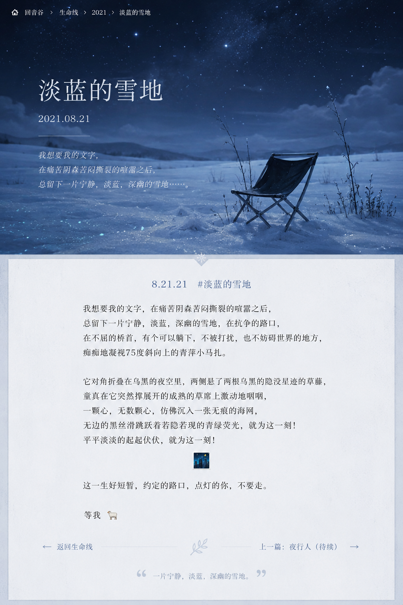

2021.08.21

我想要我的文字，在痛苦阴森苦闷撕裂的喧嚣之后，总留下一片宁静，淡蓝，深幽的雪地，在抗争的路口，在不屈的桥首，有个可以躺下，不被打扰，也不妨碍世界的地方，痴痴地凝视75度斜向上的青萍小马扎。
它对角折叠在乌黑的夜空里，两侧悬了两根乌黑的隐没星迹的草藤，童真在它突然撑展开的成熟的草席上激动地哽咽，一颗心，无数颗心，仿佛沉入一张无痕的海网，无边的黑丝滑跳跃着若隐若现的青绿荧光，就为这一刻！平平淡淡的起起伏伏，就为这一刻！
🌃
这一生好短暂，约定的路口，点灯的你，不要走。
等我 🐑